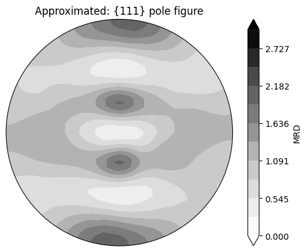
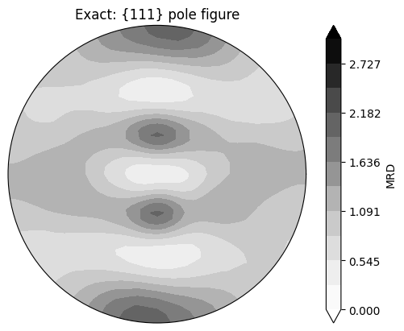
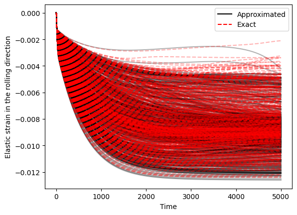
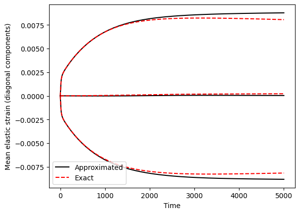

Crystal plasticity formulations¶
There are two common ways to formulate crystal plasticity kinematics:
Approximated — split the kinematics into two coupled rate equations, one for the elastic stretch and one for the crystal orientation, integrated in additive rate form. This is the small-elastic-strain approximation of the multiplicative decomposition.
Exact — integrate the plastic deformation gradient \(F_p\) directly from the plastic spatial velocity gradient \(l_p\), using the full \(F = F_e F_p\) multiplicative decomposition with no kinematic approximation.
Both rest on the multiplicative decomposition \(F = F_e F_p\). The first form is cheaper and integrates additively, but assumes the elastic strains are small; the second makes no such assumption.
A NEML2 crystal model can be written either way while reusing the same constitutive pieces — the slip rule, the hardening law, the crystal geometry. Only a few specialized sub-models differ. Here we run equivalent approximated and exact models through the same rolling history (to 50% rolling strain), reconstruct the deformed textures, and compare. Because the elastic strains stay small here, the approximation should be excellent and the two should agree.
The two models are defined in input files alongside this notebook,
crystal_approximated.i and
crystal_exact.i. Each defines just the NonlinearSystem —
the load history and the time integration live here on the Python side, driven by
pyzag. For more on the
pyzag driver see the
pyzag tutorial.
Note
This is a heavier example (500 crystals, 2500 time steps) and is committed pre-executed; it runs on the GPU when one is available.
Setup¶
This example simulates rolling in an FCC material. rate is the strain rate,
total_rolling_strain the reduction strain, ntime the number of time steps,
ncrystal the number of random initial orientations, and nchunk the pyzag
vectorized time-integration chunk size.
import matplotlib.pyplot as plt
from matplotlib.lines import Line2D
import torch
import neml2
from neml2.types import MRP, R2, SR2, WR2, Scalar, compose, r2_from_sr2, r2_from_wr2
import neml2.texture as texture
from pyzag import nonlinear, chunktime
torch.manual_seed(0)
torch.set_default_dtype(torch.double)
device = torch.device("cuda:0" if torch.cuda.is_available() else "cpu")
print(f"Using device: {device}")
nchunk = 10
ncrystal = 500
rate = 0.0001
total_rolling_strain = 0.5
ntime = 2500
end_time = total_rolling_strain / rate
Using device: cuda:0
The deformation history¶
Rolling is an isochoric stretch: extension in one transverse direction balanced
by contraction in the rolling direction, with no spin. We build the deformation
rate (an SR2) and the vorticity (a WR2); the exact model additionally needs
the deformation gradient \(F\), which we obtain by integrating the spatial velocity
gradient \(l = \dot\varepsilon + w\) with the exponential map.
The 500 initial orientations are sampled uniformly on \(SO(3)\) with MRP.rand.
# Deformation rate (symmetric) and vorticity (skew), as typed batched tensors
# over (ntime, ncrystal). Rolling: +rate along y, -rate along z, no spin.
deformation_rate = torch.zeros((ntime, ncrystal, 6), device=device)
deformation_rate[:, :, 1] = rate
deformation_rate[:, :, 2] = -rate
deformation_rate = SR2(deformation_rate)
vorticity = WR2(torch.zeros((ntime, ncrystal, 3), device=device))
times = torch.linspace(0, end_time, ntime, device=device).unsqueeze(-1).expand(ntime, ncrystal)
# Uniformly random initial orientations (modified Rodrigues parameters).
initial_orientations = MRP.rand(ncrystal, device=device)
# The exact model is driven by the deformation gradient F. Build it from the
# spatial velocity gradient l = sym(deformation_rate) + skew(vorticity) using the
# typed SR2/WR2 -> R2 reconstructions, then integrate with the matrix exponential.
spatial_velocity_gradient = r2_from_sr2(deformation_rate).data + r2_from_wr2(vorticity).data
F = torch.zeros_like(spatial_velocity_gradient)
F[0] = torch.eye(3, device=device)
dt = torch.diff(times, dim=0)
Finc = torch.linalg.matrix_exp(spatial_velocity_gradient[:-1] * dt[..., None, None])
for i in range(1, ntime):
F[i] = Finc[i - 1] @ F[i - 1]
F = R2(F)
pyzag helpers¶
pyzag integrates a NEML2 NonlinearSystem through the load history. Three small
helpers bridge the typed NEML2 surface and pyzag’s flat tensors:
assemble_forcespacks a name-keyed dict of typed force tensors into the flat layout the pyzag-wrapped model expects;seed_statebuilds the initial state vector, writing any seeded variables (the initial orientation, the initial \(F_p\)) into their layout slices;extractslices a named variable back out of the integrated state history.
These mirror exactly how the pyzag adapter splits the flat state internally, so the round trip is metadata-safe.
def assemble_forces(pmodel, forces):
# Pack a {name: typed tensor} dict into pyzag's flat force layout.
forces = {name: forces[name] for name in pmodel.fvars}
return neml2.SparseVector(pmodel.flayout, forces).assemble().tensors[0].data
def _state_layout(pmodel):
for name in pmodel.slayout.vars():
yield name, pmodel.slayout.var_size(name)
def seed_state(pmodel, batch, seeds):
# Initial flat state: zeros, each seeded variable written into its layout slice.
nstate = sum(size for _, size in _state_layout(pmodel))
state0 = torch.zeros(batch + (nstate,), device=device)
offset = 0
for name, size in _state_layout(pmodel):
if name in seeds:
state0[..., offset : offset + size] = seeds[name].reshape(batch + (size,))
offset += size
return state0
def extract(pmodel, history, name):
# Slice a named variable out of the (..., nstate) integrated history.
offset = 0
for var, size in _state_layout(pmodel):
if var == name:
return history[..., offset : offset + size]
offset += size
raise KeyError(name)
def make_solver(pmodel):
return nonlinear.RecursiveNonlinearEquationSolver(
pmodel,
step_generator=nonlinear.StepGenerator(nchunk),
predictor=nonlinear.PreviousStepsPredictor(),
nonlinear_solver=chunktime.ChunkNewtonRaphson(rtol=1.0e-6, atol=1.0e-8),
)
Approximated formulation¶
The approximated model carries the elastic strain, the slip hardening, and the crystal orientation as unknowns, integrating coupled rate equations for each in additive form. The orientation is seeded with the random initial texture; the deformation rate and vorticity drive the model.
nmodel_approx = neml2.load_nonlinear_system("crystal_approximated.i", "eq_sys")
nmodel_approx.to(device=device)
pmodel_approx = neml2.pyzag.NEML2PyzagModel(nmodel_approx)
forces_approx = assemble_forces(
pmodel_approx,
{"t": Scalar(times, 0), "deformation_rate": deformation_rate, "vorticity": vorticity},
)
state0_approx = seed_state(pmodel_approx, (ncrystal,), {"orientation": initial_orientations.data})
with torch.no_grad():
history_approx = nonlinear.solve_adjoint(
make_solver(pmodel_approx), state0_approx, len(forces_approx), forces_approx
)
# The final orientation is simply the integrated orientation state.
orientations_approx = MRP(extract(pmodel_approx, history_approx, "orientation")[-1])
print("approximated final orientations:", tuple(orientations_approx.data.shape))
/tmp/ipykernel_2537030/3370324225.py:35: UserWarning: pyzag lowered torch._functorch.config.donated_buffer's default to False process-wide. AOTAutograd 'donated buffers' (torch>=2.12) are incompatible with pyzag's retain_graph=True adjoint over torch.compile'd models, which otherwise raises 'compiled with non-empty donated buffers'. To keep donated buffers enabled, restore torch._functorch.config._config['donated_buffer'].default = True -- compiled models differentiated through the adjoint will then error.
return nonlinear.RecursiveNonlinearEquationSolver(
approximated final orientations: (500, 3)
We reconstruct a continuous orientation distribution function (ODF) from the discrete final orientations with a kernel density estimate. The de la Vallee Poussin kernel half-width is fixed (rather than cross-validated) so the two formulations are compared on equal footing.
odf_approx = texture.KDEODF(
orientations_approx, texture.DeLaValleePoussinKernel(torch.tensor(0.2, device=device))
)
odf_approx.kernel.h = torch.tensor(0.23, device=device)
Exact formulation¶
The exact model carries the slip hardening and the plastic deformation gradient
\(F_p\) as unknowns; the orientation enters as a fixed reference force r. \(F_p\) is
seeded to the identity. The model is driven by the deformation gradient \(F\).
nmodel_exact = neml2.load_nonlinear_system("crystal_exact.i", "eq_sys")
nmodel_exact.to(device=device)
pmodel_exact = neml2.pyzag.NEML2PyzagModel(nmodel_exact)
r_force = MRP(initial_orientations.data.unsqueeze(0).expand(ntime, ncrystal, 3).contiguous())
forces_exact = assemble_forces(pmodel_exact, {"t": Scalar(times, 0), "F": F, "r": r_force})
eye = torch.eye(3, device=device).reshape(9).expand(ncrystal, 9)
state0_exact = seed_state(pmodel_exact, (ncrystal,), {"Fp": eye})
with torch.no_grad():
history_exact = nonlinear.solve_adjoint(
make_solver(pmodel_exact), state0_exact, len(forces_exact), forces_exact
)
print("exact state history:", tuple(history_exact.shape))
exact state history: (2500, 500, 10)
Extracting the orientation from the exact model takes some doing. We recover \(F_p\)
from the final state, form \(F_e = F F_p^{-1}\), take the rotation \(R_e\) from a polar
decomposition of \(F_e\), convert it to an MRP with MRP.from_matrix, and finally
compose it with the initial orientation to get the deformed texture.
def lattice_rotation(Fp_flat, F_now):
# Rotation (as MRP) from the elastic part of F, via polar decomposition of Fe.
Fp = Fp_flat.reshape(Fp_flat.shape[:-1] + (3, 3))
Fe = F_now @ torch.linalg.inv(Fp)
U, _, Vh = torch.linalg.svd(Fe)
return MRP.from_matrix(R2(U @ Vh))
Fp_final = extract(pmodel_exact, history_exact, "Fp")[-1]
Re = lattice_rotation(Fp_final, F.data[-1])
orientations_exact = compose(Re, initial_orientations)
print("exact final orientations:", tuple(orientations_exact.data.shape))
odf_exact = texture.KDEODF(
orientations_exact, texture.DeLaValleePoussinKernel(torch.tensor(0.2, device=device))
)
odf_exact.kernel.h = torch.tensor(0.23, device=device)
exact final orientations: (500, 3)
Compare the textures¶
The reconstructed ODFs give continuous \(\{111\}\) pole figures for each
formulation. With cubic crystal symmetry ("432") the two should look the same.
pole = torch.tensor([1.0, 1.0, 1.0], device=device)
for name, odf in [("Approximated", odf_approx), ("Exact", odf_exact)]:
texture.pretty_plot_pole_figure_odf(
odf, pole, crystal_symmetry="432", limits=(0.0, 3.0), ncontour=12
)
plt.title(f"{name}: {{111}} pole figure")
plt.show()


Compare the elastic strains¶
Finally we compare the elastic strain histories. For the approximated model the elastic strain is a state variable; for the exact model we recover it from \(F_e = F F_p^{-1}\) over the whole history via the Green-Lagrange-like measure \(E = \tfrac12 (U_e^\top U_e - I)\) of the elastic stretch \(U_e\).
The per-crystal histories differ slightly between the two measures, but their averages agree — confirming the additive approximation is excellent at these (small) elastic strains.
# Approximated: elastic strain is a state variable (SR2, Mandel order).
elastic_strain_approx = SR2(extract(pmodel_approx, history_approx, "elastic_strain"))
# Exact: recover the elastic stretch over the whole history.
Fp_hist = extract(pmodel_exact, history_exact, "Fp").reshape(ntime, ncrystal, 3, 3)
Fe_hist = F.data @ torch.linalg.inv(Fp_hist)
U_hist, S_hist, Vh_hist = torch.linalg.svd(Fe_hist)
Ue_hist = Vh_hist.transpose(-2, -1) @ torch.diag_embed(S_hist) @ Vh_hist
E_exact = 0.5 * (Ue_hist.transpose(-2, -1) @ Ue_hist - torch.eye(3, device=device))
t_axis = times[:, 0].cpu()
# Elastic strain in the rolling direction (zz), every crystal.
plt.plot(t_axis, elastic_strain_approx.data[:, :, 2].cpu(), "k-", alpha=0.3)
plt.plot(t_axis, E_exact[:, :, 2, 2].cpu(), "r--", alpha=0.3)
plt.xlabel("Time")
plt.ylabel("Elastic strain in the rolling direction")
plt.legend(
[Line2D([0], [0], color="k"), Line2D([0], [0], color="r", linestyle="--")],
["Approximated", "Exact"],
loc="best",
)
plt.show()

# Averages of the diagonal elastic strain components.
for i in range(3):
plt.plot(t_axis, elastic_strain_approx.data[:, :, i].mean(dim=-1).cpu(), "k-")
plt.plot(t_axis, E_exact[:, :, i, i].mean(dim=-1).cpu(), "r--")
plt.xlabel("Time")
plt.ylabel("Mean elastic strain (diagonal components)")
plt.legend(
[Line2D([0], [0], color="k"), Line2D([0], [0], color="r", linestyle="--")],
["Approximated", "Exact"],
loc="best",
)
plt.show()
